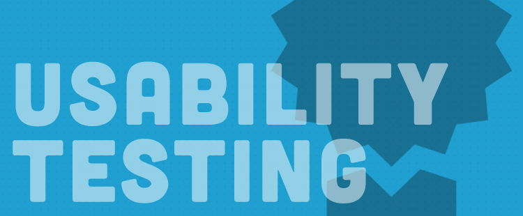

User Testing

Follow ideas for DIY user testing in “Rocket Surgery Made Easy” by Steve Krug.
Write a script for your sessions, make a list of actions, and conduct 3-5 tests. Record your sessions with Silverback. When you're finished, make a list of things to change. Prioritize then and create stories for the work in Artisan.